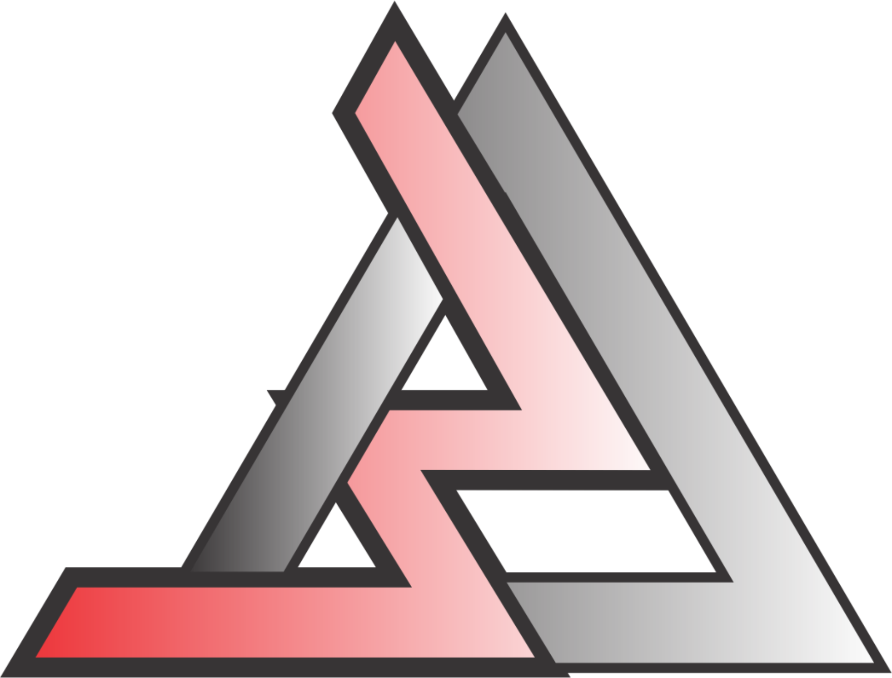

Linguagem R na Ciência de Dados
Aula 07 - A filosofia do ggplot2
Filosofia de publicação (Selo DC)

A Filosofia do ggplot2: A Gramática dos Gráficos
O ggplot2 foi desenvolvido por Hadley Wickham com base na teoria chamada:
Grammar of Graphics (Gramática dos Gráficos)
proposta pelo estatístico Leland Wilkinson.
A ideia central é extremamente importante:
Um gráfico não é apenas uma figura pronta. Um gráfico é a combinação de componentes organizados logicamente.
1. O problema dos sistemas gráficos tradicionais
Nos sistemas antigos (inclusive Base R), normalmente pensamos:
r id="v9jlwm" plot(x, y)
Ou seja:
“Desenhe um gráfico.”
O foco está no gráfico final.
No ggplot2, o pensamento muda completamente:
“Quais componentes formam o gráfico?”
Assim, o gráfico passa a ser construído em camadas.
2. A ideia da gramática
Assim como uma frase possui:
- sujeito;
- verbo;
- objeto;
- complementos;
um gráfico também possui componentes fundamentais.
O ggplot2 organiza isso como uma linguagem.
3. Componentes fundamentais da gramática
A estrutura conceitual do ggplot2 envolve:
| Componente | Função |
|---|---|
| Dados | Fonte das informações |
Estética (aes) |
Mapeamento visual |
Geometria (geom) |
Forma visual |
Estatística (stat) |
Transformações |
Escalas (scale) |
Conversão visual |
Coordenadas (coord) |
Sistema de eixos |
Facetas (facet) |
Divisão em painéis |
Tema (theme) |
Aparência |
4. O gráfico como uma construção
Observe:
r id="9s5n9o" ggplot(dados, aes(x, y)) + geom_point()
Aqui temos:
Dados
r id="jlwm3r" dados
É a tabela usada.
Estética
r id="wmhfg5" aes(x, y)
Define:
- o que vai no eixo X;
- o que vai no eixo Y.
Geometria
r id="db3vzd" geom_point()
Define:
Como os dados serão desenhados.
Nesse caso:
- pontos.
5. O conceito de “mapeamento”
No ggplot2, fazemos:
r id="fjlwm7" aes(x, y)
Isso significa:
“Mapeie a variável x para o eixo X.”
e
“Mapeie a variável y para o eixo Y.”
Isso é extremamente importante.
Porque o ggplot2 pensa:
Variáveis → propriedades visuais.
6. Variáveis podem controlar muitas coisas
Uma variável pode controlar:
| Elemento visual | Exemplo |
|---|---|
| posição | x, y |
| cor | color |
| tamanho | size |
| forma | shape |
| transparência | alpha |
| preenchimento | fill |
7. Exemplo importante
```r id=“ryr65s” ggplot(dados2, aes(x, y, color = grupo)) +
geom_point(size = 3)
Aqui:
* `x` controla posição horizontal;
* `y` controla posição vertical;
* `grupo` controla cor.
---
# 8. O poder da separação entre dados e desenho
No Base R, muitas vezes misturamos:
* dados;
* aparência;
* desenho.
No `ggplot2`, tudo é separado.
Isso traz:
* organização;
* reutilização;
* clareza;
* consistência.
---
# 9. O conceito de camadas
O `ggplot2` trabalha em camadas.
---
## Primeira camada
```r id="mjlwm7"
ggplot(dados, aes(x, y))Define a estrutura.
Segunda camada
r id="4nh4rh" geom_point()
Adiciona pontos.
Terceira camada
r id="3n4r09" geom_line()
Adiciona linhas.
Quarta camada
r id="v87l7r" theme_classic()
Muda aparência.
10. Exemplo completo
```r id=“2rwcl0” ggplot(dados, aes(x, y)) +
geom_point( color = “blue”, size = 3 ) +
geom_line() +
labs( title = “Exemplo”, x = “Tempo”, y = “Produção” ) +
theme_classic()
Observe a lógica:
| Parte | Função |
| -------------- | ----------- |
| `ggplot()` | estrutura |
| `aes()` | mapeamentos |
| `geom_point()` | pontos |
| `geom_line()` | linhas |
| `labs()` | rótulos |
| `theme_*()` | aparência |
---
# 11. O operador `+`
No `ggplot2`, usamos:
```r id="1wjlwm"
+porque estamos:
Adicionando camadas.
Isso é uma ideia central da gramática.
12. O pensamento declarativo
O ggplot2 é declarativo.
Você descreve:
“O que deseja mostrar.”
e não:
“Como desenhar pixel por pixel.”
Exemplo:
r id="r4j4q8" geom_boxplot()
Você apenas declara:
“Quero um boxplot.”
O pacote calcula:
- quartis;
- mediana;
- limites;
- outliers.
13. Estatísticas automáticas
Muitas geometrias fazem cálculos automaticamente.
Histograma
r id="m1z83w" geom_histogram()
Automaticamente calcula:
- classes;
- frequências.
Boxplot
r id="lbjlwm" geom_boxplot()
Calcula:
- Q1;
- mediana;
- Q3;
- outliers.
14. Separação entre estética e configuração fixa
Isso é MUITO importante.
Dentro do aes()
r id="sps3os" aes(color = grupo)
Significa:
a cor depende dos dados.
Fora do aes()
r id="i8ps7d" geom_point(color = "blue")
Significa:
todos os pontos serão azuis.
15. Facetas na gramática
Facetas seguem a mesma filosofia:
r id="hjjlwm" facet_wrap(~grupo)
Aqui:
- os dados são divididos;
- cada subconjunto gera um painel.
16. Escalas
As escalas fazem a tradução entre:
- dados;
- representação visual.
Exemplo:
r id="1jvjlwm" scale_color_manual( values = c("red", "blue") )
Traduz categorias para cores.
17. Coordenadas
As coordenadas definem:
- orientação;
- transformação espacial.
Exemplo polar
r id="mgmmpn" coord_polar()
Transforma gráfico em formato circular.
18. Temas
Os temas controlam:
- fundo;
- grades;
- fontes;
- eixos;
- aparência geral.
Exemplo:
r id="fxa6to" theme_minimal()
19. Por que o ggplot2 se tornou tão importante?
Porque ele trouxe:
| Vantagem | Resultado |
|---|---|
| Organização | Código limpo |
| Padronização | Facilidade de leitura |
| Modularidade | Reutilização |
| Camadas | Flexibilidade |
| Gramática | Consistência |
20. Comparação conceitual
Base R
Pensamento:
“Desenhe este gráfico.”
ggplot2
Pensamento:
“Mapeie variáveis em elementos visuais.”
21. Exemplo mental importante
Considere:
r id="35n8qz" ggplot(dados, aes( x = idade, y = salario, color = sexo, size = experiencia ))
O ggplot2 entende:
| Variável | Representação |
|---|---|
| idade | posição X |
| salario | posição Y |
| sexo | cor |
| experiencia | tamanho |
Isso é a essência da gramática.
22. Resumo final
A filosofia do ggplot2 é:
Construir gráficos como combinações organizadas de componentes.
A gramática dos gráficos transforma visualização em:
- linguagem;
- estrutura;
- sistema coerente;
- composição de camadas.
Por isso o ggplot2 se tornou um dos sistemas gráficos mais importantes da ciência de dados moderna.
